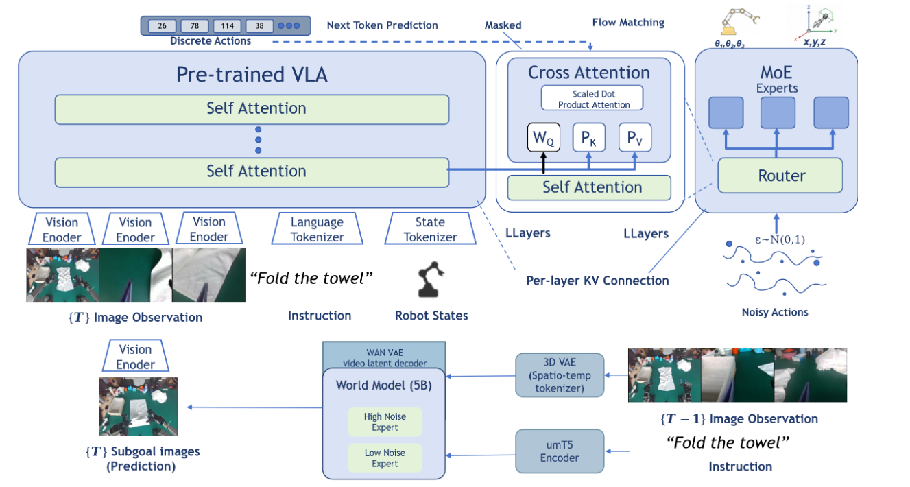
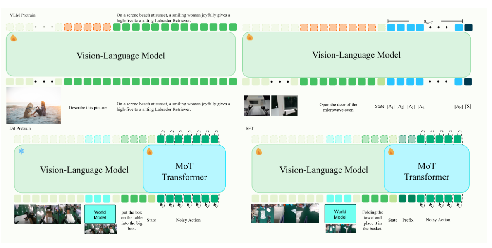

PRIME W0
Physical Priors from World Models for Embodied Manipulation
1 Lumos SZ Lab Team · 2 Lumos Robotics · 3 THU · 4 CUHK · 5 NTU
† Team leader · * Corresponding author
A policy with
physical memory.
VLA models are compelling instruction followers, but the physical world requires more than the current frame.
Physical skills,
in increasing difficulty.
Five real-robot demonstrations grouped by the physical challenge each one exposes.
Choose a capability to focus the examples. Native video controls support scrubbing, playback speed, volume, and fullscreen.
Challenge labels describe the visible manipulation demands. Use the timeline to scrub to any moment or enter fullscreen for a closer view.
From vision hierarchy
to action dynamics.
PRIME W0 preserves the VLM's rich, layer-wise knowledge while adding temporal physical priors precisely where action generation needs them.
Per-layer KV injection
Hidden states from a pretrained VLM are injected at every action layer, letting an Adaptive MoE expert select the representation depth the current action requires.
World-model semantic bridge
An asynchronously predicted subgoal image is paired with a DINOv2 bridge over historical frames, so the controller remains grounded in how the scene is changing.
Action Dynamic Manifold
Covariance-structured noise aligns flow matching with robot kinematic coupling, shaping a more physically coherent action distribution.


Strong in simulation.
Stronger in the real world.
PRIME W0 pairs state-of-the-art LIBERO performance with consistent gains on contact-rich physical tasks.
TABLE 1 · LIBERO TASK SUCCESS (%)
| Method | Spatial | Object | Goal | Long | Average |
|---|---|---|---|---|---|
| OpenVLA [15] | 84.7 | 88.4 | 79.2 | 53.7 | 76.5 |
| π0-FAST [25] | 96.4 | 96.8 | 88.6 | 60.2 | 85.5 |
| GR00T-N1 [24] | 94.4 | 97.6 | 93.0 | 90.6 | 93.9 |
| π0 [5] | 96.8 | 98.8 | 95.8 | 85.2 | 94.2 |
| UniVLA [7] | 95.4 | 98.8 | 93.6 | 94.0 | 95.5 |
| Discrete Diffusion VLA [19] | 97.2 | 98.6 | 97.4 | 92.0 | 96.3 |
| OpenVLA-OFT [16] | 97.6 | 98.4 | 97.9 | 94.5 | 97.1 |
| MemoryVLA [30] | 98.4 | 98.4 | 96.4 | 93.4 | 96.7 |
| π0.5 [26] | 98.8 | 98.2 | 98.0 | 92.4 | 96.9 |
| FLOWER [28] | 97.5 | 99.1 | 96.1 | 94.9 | 96.9 |
| EO-1 [27] | 99.7 | 99.8 | 99.2 | 94.8 | 98.4 |
| PRIME W0 (Ours) | 98.8 | 100.0 | 99.0 | 98.6 | 99.1 |
PRIME W0 reaches 99.1% average success, with the strongest score on LIBERO-Object (100.0%) and LIBERO-Long (98.6%). Bold marks best; underline marks second best.
TABLE 2 · REAL-ROBOT TASK SUCCESS (%)
| Task | OpenVLA | GR00T-N1.6 | π0.5 | PRIME W0 |
|---|---|---|---|---|
| Pick-and-place | 39.1 | 75.3 | 81.4 | 93.7 |
| Stacking | 25.2 | 61.8 | 67.9 | 70.1 |
| Cloth folding | 4.6 | 21.2 | 85.4 | 89.1 |
| Small-object grasping | 8.3 | 26.7 | 59.2 | 61.8 |
| Assembly | 1.4 | 22.1 | 51.8 | 75.9 |
| Average | 15.7 | 41.4 | 69.1 | 78.1 |
All methods use the same physical hardware under identical conditions. Gains are largest in temporally extended, contact-rich tasks: cloth folding (+3.7 points), small-object grasping (+2.6), and assembly (+24.1) over π0.5. These tasks require stable phase tracking across control cycles—the regime targeted by world-model subgoal injection, historical tokens Whist, and phase-aware MoE routing.
Three priors,
one policy.
VLM features without collapse
Layer-wise KV injection avoids discarding the detailed visual structure distributed throughout a pretrained VLM.
World models at action time
Asynchronous subgoal prediction and historical-frame semantics make the control process explicitly dynamics-aware.
Manifold-aware actions
ADM flow matching respects kinematic correlations instead of treating each action dimension as independent noise.
Read and cite.
The full paper describes the four-stage training recipe, benchmark results, and component ablations.
Physical Priors from World Models
Preview and download always use the latest arXiv PDF.
Open arXiv PDF ↗@misc{peng2026primew0,
title={PRIME W0: Physical Priors from World Models
for Embodied Manipulation},
author={Peng, Huabin and Jin, Fagang and Wei, Yancong
and Ma, Tengfei and Liu, Chuhang and Yu, Chao
and Chen, Liqing},
year={2026},
eprint={2610.39528},
archivePrefix={arXiv},
primaryClass={cs.RO},
url={https://arxiv.org/abs/2610.39528}
}